Codespaces#
This codespace is powered by the Dynatrace Enablement Framework, this means that this codespace:
- can run in github codespaces, as a remote container or locally as docker container
- is crosscompiled for AMD and ARM architectures
- follows a set of standards and best practices for enhancing the user experience
Want to learn more about it? We invite you to read this documentation
Codespace Prep#
Configure Codespaces Settings - Secrets#
If you previously participated in a Dynatrace training using Codespaces, you may have existing secrets that will conflict with our training today.
Open the GitHub Codespaces settings link: https://github.com/settings/codespaces in a new tab in your browser.
Under the Secrets section, Codespace user secrets, check if these secrets exist.
DT_INGEST_TOKEN
DT_OPERATOR_TOKEN
DT_TENANT
If found, select the delete icon for each secret that exists.
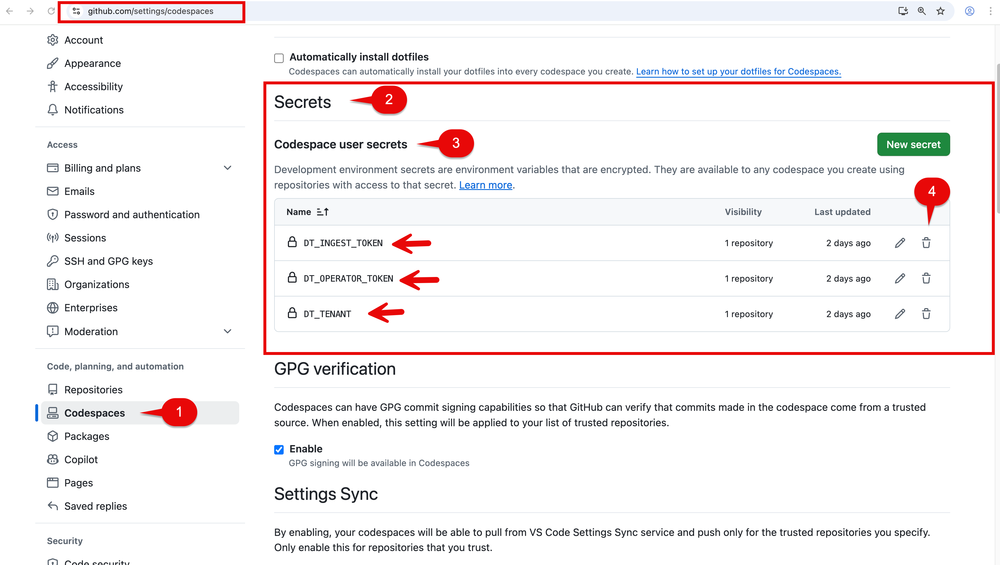
You will get a Delete secret prompt, select the Yes, delete this secret button.
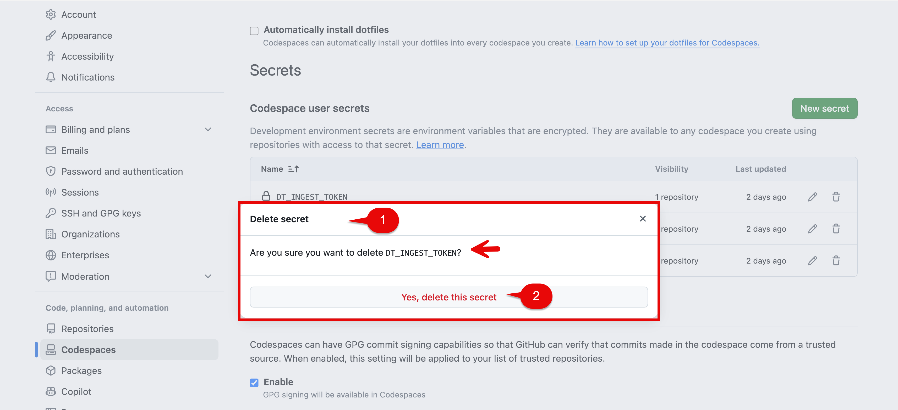
You may get a Confirm access prompt, enter your Github password and then select the Confirm button.
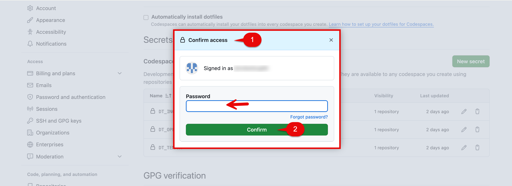
Leave the GitHub Codespaces settings browser tab open.
In next section of this lab we will be changing another setting.
Configure Codespaces Settings - Default idle timeout#
By default, codespaces instances will suspend after 30 minutes of inactivity. This may cause problems with your lab.
Scroll down GitHub Codespaces settings section and find the section called Default idle timeout.
Increase the Default idle timeout setting in the minutes section to use the following:
240
Save button.
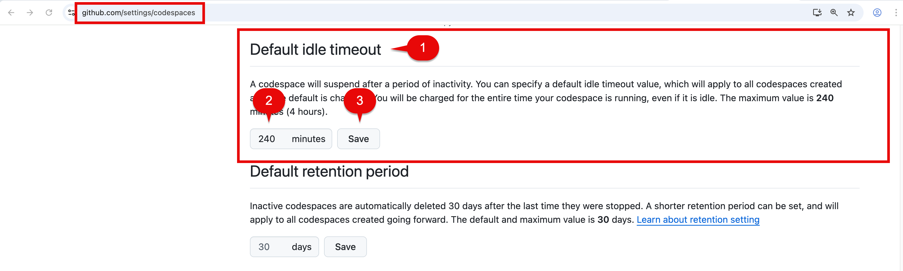
When complete you can close the GitHub Codespaces settings browser tab.
Create Codespace#
Click to open Codespaces for this lab repository:

Codespace Configuration
- Branch
- select the main branch
- Dev container configuration
- select Enablement Business Observability
- Machine type
- select 4-core
- Region
- select any region, preferably one closest to your Dynatrace tenant
Codespaces Cluster Set Up#
The source repository for this lab is:
enablement-business-observability
Open the link above in a new tab in your browser.
Click on Code. Click on Codespaces. Click on New with options.
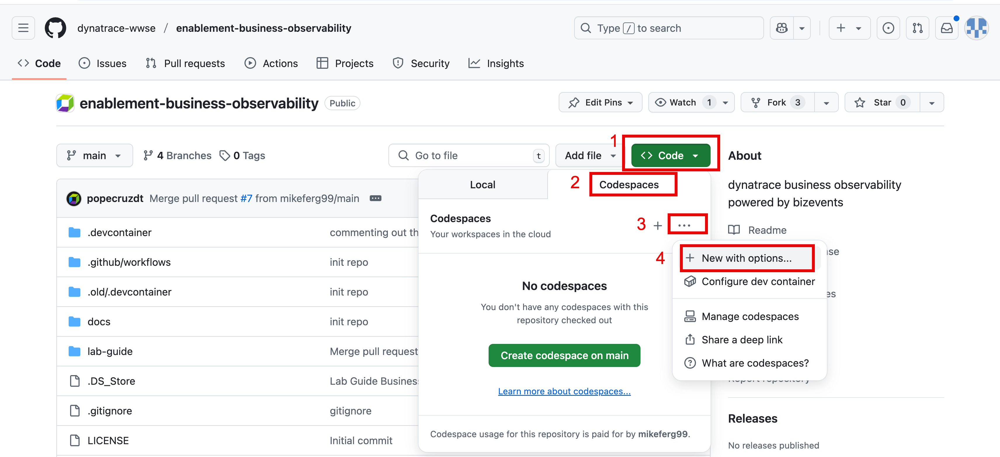
Choose the Branch main.
Choose the Dev Container Configuration Enablement Business Observability.
Choose a region close to your Dynatrace tenant. If you run into issues with spinning up your codespaces instance, try selecting a different region.
Choose Machine Type 4-core.
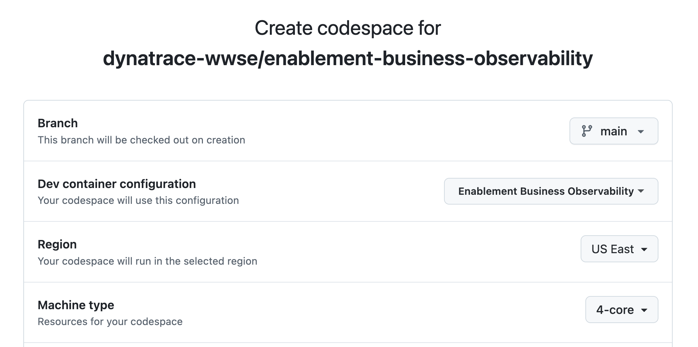
Fill in recommend secrets sections for the following that you have in your saved notepad:
DT_TENANT
DT_OPERATOR_TOKEN
DT_INGEST_TOKEN
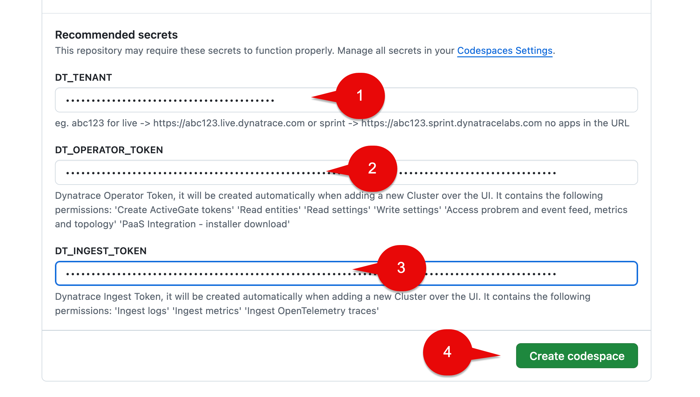
⚠️ If any of the secrets sections have a checkbox Associated with repository?, leave this browser tab open. Go back to Configure Codespaces Settings - Secrets section above in this lab and complete that section. Refresh this browser tab and you should now be able to fill in the secrets. ⚠️
Codespaces Codespace Instance#
Your browser tab will change to the Codespace initialize screen.
Allow the Codespace instance to fully initialize. It is not ready yet.
It will take about 10 minutes to fully finish.
During the initialize phase you will see:
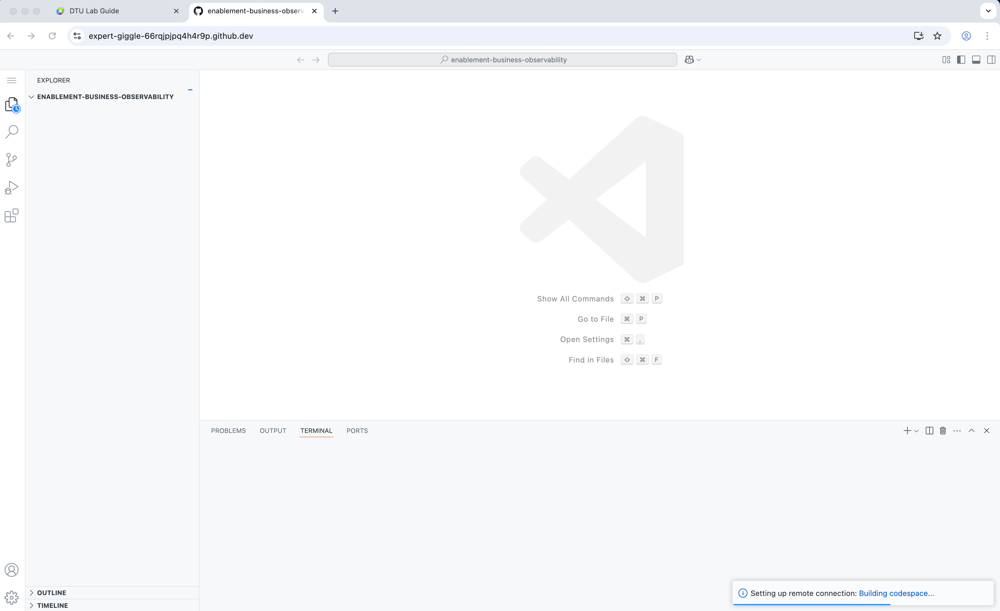
The Codespace instance will run the post initialization scripts.
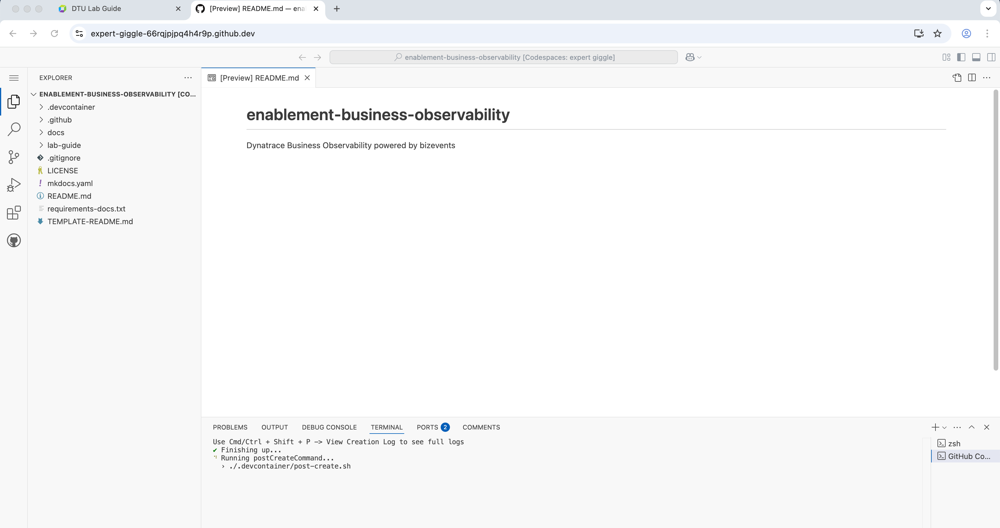
Again, it will take about 10 minutes to fully finish...give it time!
When fully finished you see below.
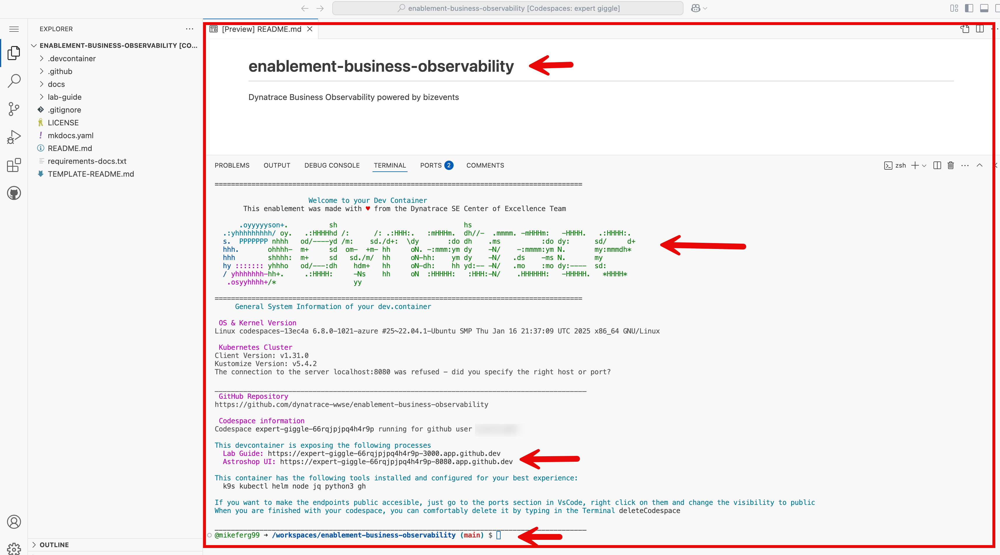
Astroshop Validation#
In the Codespace window, you will see a section called:
This devcontainer is exposing the following processes
Astroshop UI section, cmd + click the url or copy and paste the url in a new browser tab. This will launch Astroshop UI.
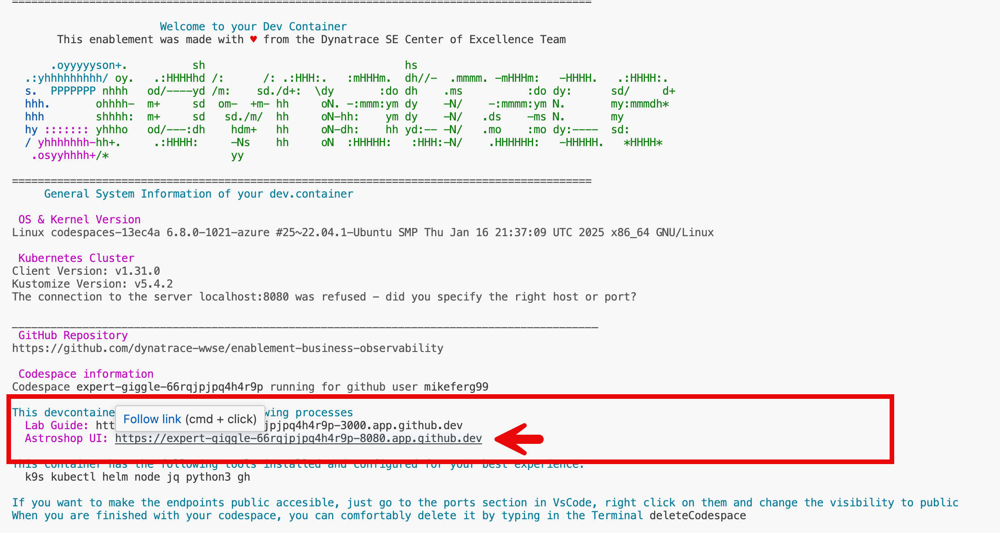
If you caught in time you could also select the Open in Browser pop up at the very bottom right of the screen to Launch Astroshop. Either approach works!
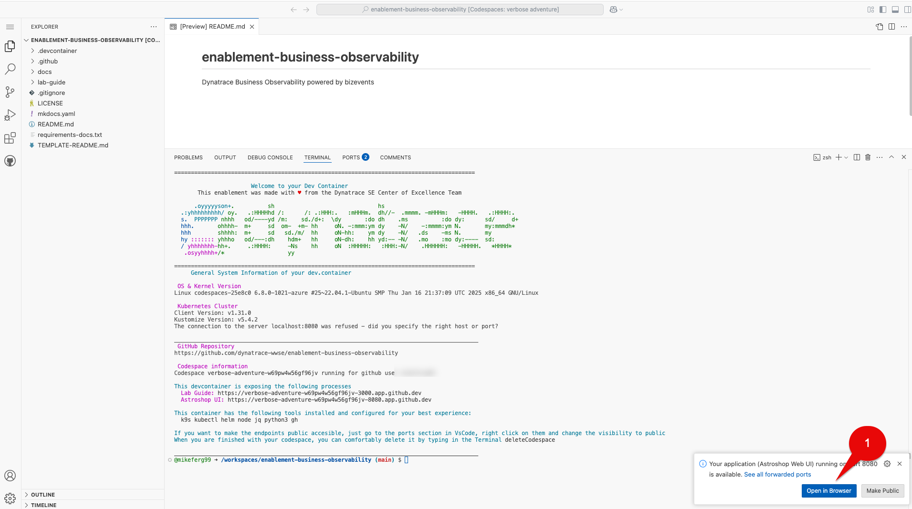
If for some reason Astroshop is not connecting when opening in new tab run the below command in the terminal.
exposeAstroshop
Astroshop UI section, cmd + click the url or copy and paste the url in a new browser tab. This will launch Astroshop UI.
Take a minute to navigate around.
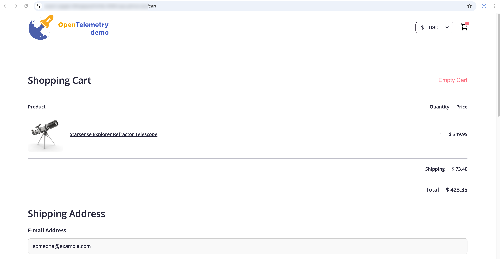
Dynatrace Data Validation - Distributed Traces#
Open the Distributed Tracing app.
In the filter section copy and paste this below:
Service = frontend AND Endpoint = "/api/checkout"
Select the Update button.
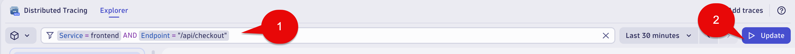
Validate you see traces for "/api/checkout".
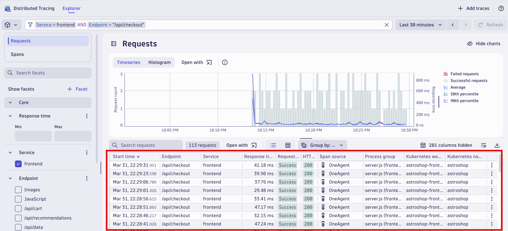
Select a single trace to see the single trace details.
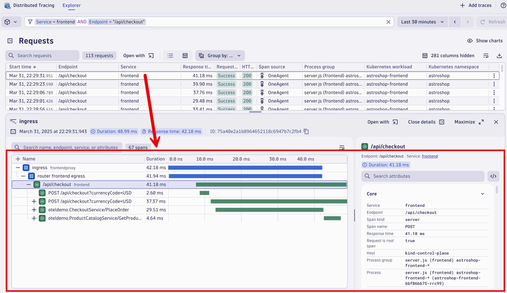
Dynatrace Data Validation - Logs#
Open the Logs app.
In the filter section copy and paste this below:
content = "*frauddetectionservice - Consumed record with orderId*"
Select the Run query button.
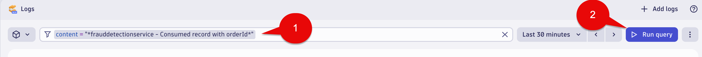
Validate you see log lines for "frauddetectionservice - Consumed record with orderId:".
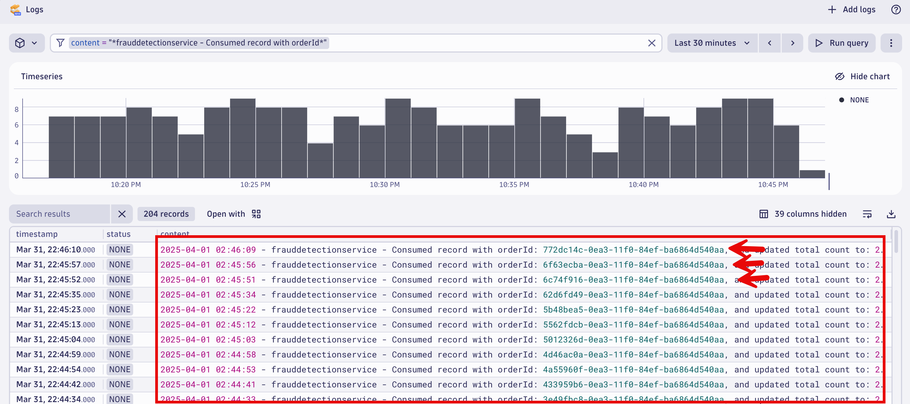
Troubleshooting#
If you don't see data for Distributed Traces and Logs data validation steps above do the following.
Environment Variables Validation:
In the Codespaces terminal run the following commands:
echo $DT_TENANT
echo $DT_OPERATOR_TOKEN
echo $DT_INGEST_TOKEN
Validate the variables output to what you configured in the Configure Codespaces Settings - Secrets section above in this training.
Make sure to check for:
⚠️ No apps in the URL! ⚠️
⚠️ Make sure there is no trailing / at the end of the DT_TENANT ⚠️
⚠️ Make sure the $DT_OPERATOR_TOKEN & $DT_INGEST_TOKEN are not the same ⚠️
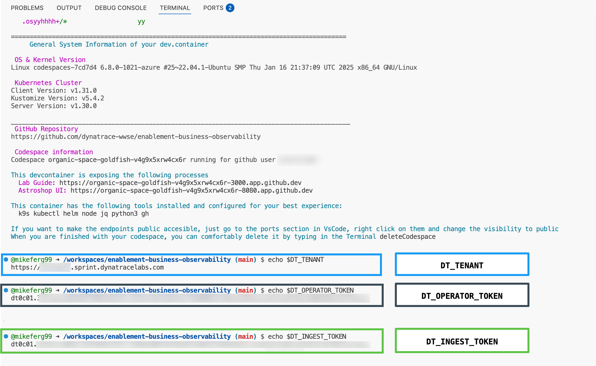
If there are mistakes, navigate to the GitHub Codespaces page at https://github.com/codespaces/
Locate your instance, click the ... button, and click Delete.
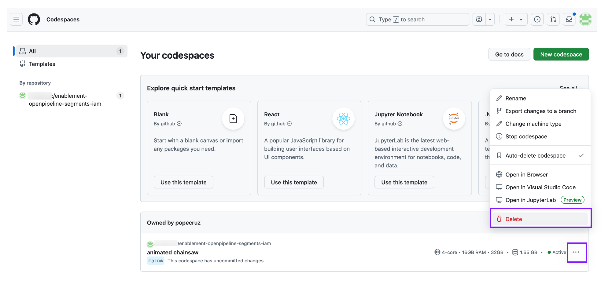
Then go back and collect the correct information needed for:
DT_INGEST_TOKEN
DT_OPERATOR_TOKEN
DT_TENANT
Then resume the lab starting at the Codespaces Cluster Set Up section above in this training.
If the variables are correct, we need to confirm Astroshop and Dynatrace are running correctly.
Astroshop Validation:
In the Codespaces terminal run the following commands:
kubectl get pods -n astroshop
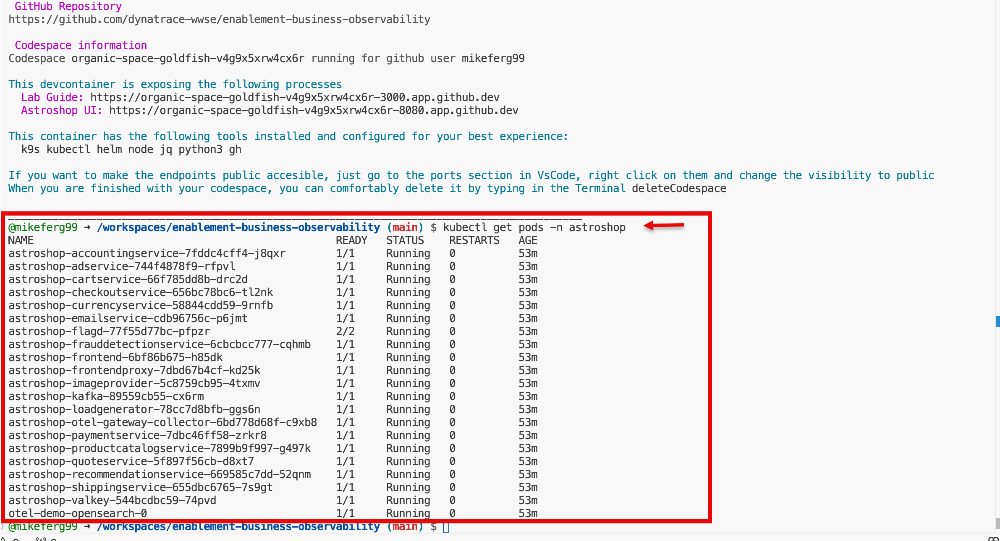
Dynatrace Validation:
In the Codespaces terminal run the following commands:
kubectl get pods -n dynatrace
If any of the Astroshop or Dynatrace Pods are not in a STATUS of running it would be best to Delete this Codespace instance.
Navigate to the GitHub Codespaces page at https://github.com/codespaces/
Locate your instance, click the ... button, and click Delete.
Then resume the lab starting at the Codespaces Cluster Set Up section above in this training.
Codespace Disconnected#
When your Codespace for this training is up and running and you accidently close the Codespace browser tab, or network reconnection errors occur, don't worry, we can relaunch it.
Navigate to the GitHub Codespaces page at https://github.com/codespaces/
At the bottom of the page under the Owned by section, you should see your Codespace instance in an Active state.
Select the ... to the right of Active.
This will open a menu of items.
Select Open in Browser.
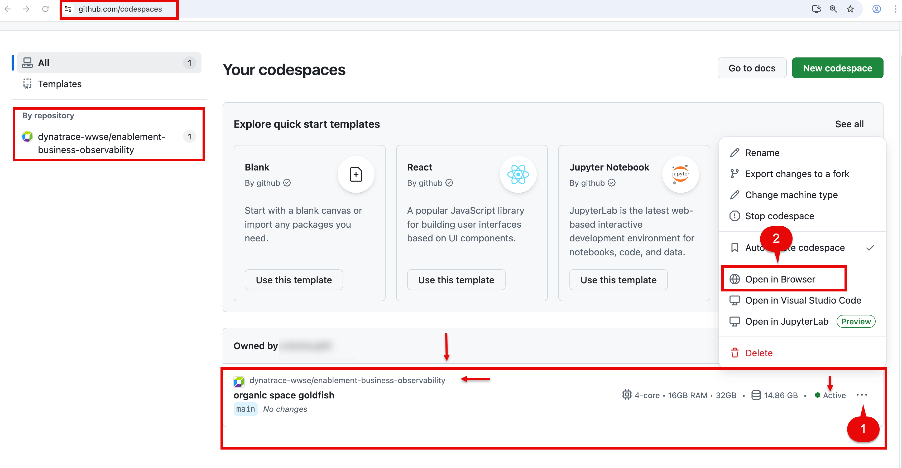
This will launch your running Codespace instance in a new browser tab.
Conclusion#
We have completed the step of Codespaces setup, verified Astroshop is running, verified the Distributed traces and Log lines needed are being consumed. We are ready to move to the Hands on Labs!!
Continue#
In the next section, we'll capture Business Events using the OneAgent.